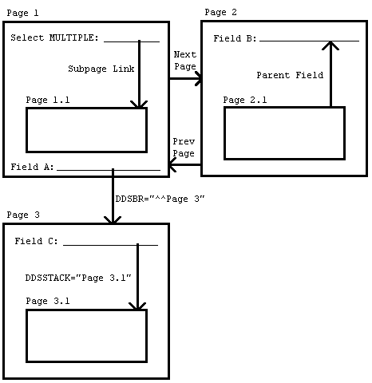

| Contents: | Main | Chapter | See Also: | Getting Started Manual | Advanced User Manual | |||
A form is a series of screens that are presented to the user. A form contains one or more pages, a page contains one or more blocks, and a block contains one or more fields.
Structurally, the form is an entry in the FORM (#.403) file. The FORM (#.403) file contains a PAGE Multiple, and the PAGE Multiple contains a BLOCK Multiple. The .01 field of the BLOCK Multiple is a POINTER to the BLOCK (#.404) file. The BLOCK (#.404) file contains a Multiple for fields.
Because of this structure, blocks in the BLOCK (#.404) file are reusable (i.e., the same block can be placed on more than one page and on more than one form).
Each block in the BLOCK (#.404) file that contains VA FileMan fields has a DD Number property. Each block can contain fields from only one file or subfile, as determined by this DD Number.
When a form is first invoked and the user is presented with the first page, conceptually, the user is at the top-level of the form. When the user goes to the next or previous pages, the user remains at the top-level. Only at this level can the user exit or quit the form or save changes made during the editing session.
When the user opens a subpage, however, the user has descended a level. At this level and at lower levels, the user can only close the current page or issue the Refresh command to repaint the screen; the user cannot exit or quit the form or save any changes.
Pages on a form can be linked together in a variety of ways. The following lists the places where links can be defined:
Both the Next Page and Previous Page properties link pages at the same level. The user can go to the next and previous pages by pressing <PF1><ARROW DOWN> and <PF1><ARROW UP>, respectively. Pages linked via the Next Page and Previous Page links must be regular pages; they cannot be "popup" pages. Use the DDSBR variable to take the user to another page under conditions you specify.
Both the Parent Field and Subpage Link properties allow you to take the user to a subpage at a lower level when the user presses the Enter key at a field on the parent page. The subpage can be either a regular or a "popup" page. A "popup" page is usually preferable, since it gives users a better indication that they have descended a level and must close the subpage to return to the previous level. After the user closes the subpage, ScreenMan automatically returns to the previous level (i.e., to the parent page from where the branch occurred).
The difference between the Parent Field property and the Subpage Link property is where the link is defined:
In a sense, the difference between these two properties is the direction of the "POINTER:"
Where you choose to define the link is a matter of personal preference. However, the disadvantage of defining the link in the Subpage Link property is that the block on which the field is defined may not be reusable on other forms, since the link points to a specific page on the form.
You must use either the Parent Field or the Subpage Link property to link a Multiple field on a form to a subpage that contains the fields within the Multiple.
Use the DDSSTACK variable to link a field to a subpage. It behaves just like the Parent Field and Subpage Link properties, but because it is set in M code in the Branching Logic property of a field, DDSSTACK lets you branch conditionally.
Figure 221 illustrates the various page links:
Figure 221: ScreenMan Forms—DDSSTACK Variable: Sample Page Links

Reviewed/Updated: May 2026